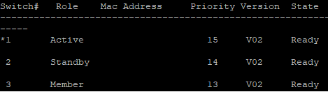
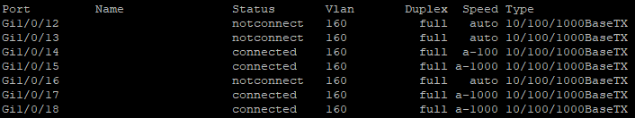
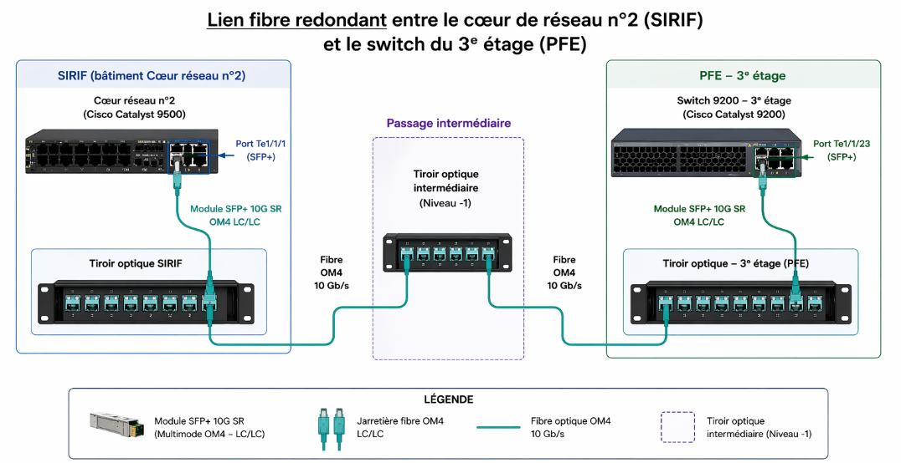

Cette page présente les réalisations menées en contexte
professionnel : support, administration, déploiement et amélioration
du parc informatique.
Stage 1ère année
Service réseau et téléphonie
Compte rendu d'activités réalisé au Centre Hospitalier
Intercommunal de Villeneuve Saint Georges, autour de la
maintenance réseau, de la téléphonie IP et du support GLPI.
CiscoVLANVoIPGLPI
Projet à compléter
Missions de stage
Espace prévu pour détailler les interventions, procédures,
outils utilisés et compétences acquises en entreprise.
Stagiaire : ALSAC Kévin
Période de stage : 23/03/2026 au 20/04/2026 (4 semaines)
Lieu du stageCentre Hospitalier Intercommunal de Villeneuve Saint Georges28 Avenue de la République, 91560 CrosneÉtablissement public de santéSanté, systèmes d'information hospitaliers, réseau et téléphonie
1. Présentation des acteurs
MOA (Maîtrise d'Ouvrage)
Service ou personne à l'origine de la demande.
Un service hospitalier (Urgences, Radiologie, Laboratoire, cuisine, lingerie...)
Service des travaux / services techniques (dans le cadre de contraintes liées aux aménagements)
MOE (Maîtrise d'Œuvre)
Service ou personne responsable de la réalisation technique.
Moi-même, stagiaire technicien réseau et téléphonie au sein du service informatique de l'hôpital de Villeneuve-Saint-Georges
Mon référent faisant partie du service réseau et téléphonie
Mon rôle
Participation à la maintenance du réseau interne (commutateurs, VLAN, brassage)
Participation à la gestion de la téléphonie IP (déploiement, configuration, dépannage)
Intervention sur les tickets utilisateurs (réseau, téléphonie, câblage)
2. Cahier des charges
Objectifs principaux des missions
Assurer la continuité du réseau informatique de l'hôpital
Participer au maintien de la téléphonie interne (VoIP)
Réorganiser ou maintenir le câblage réseau dans les services
Configurer ou dépanner des équipements réseau (commutateurs, téléphones IP)
Contraintes légales : RGPD, confidentialité des données de santé
3. Organisation du suivi du projet
Présentation de l'équipe
1 technicien réseau et téléphonie
4 techniciens support informatique N1
1 technicien gérant les caméras/interphones
3 personnes de l'équipe projet
2 administrateurs système
1 administrateur gérant l'interopérabilité de plusieurs systèmes
1 responsable du service informatique
Moi-même en renfort sur les tâches réseau/téléphonie
Méthode de gestion de projet
Organisation interne du service informatique
Priorisation des interventions selon l'impact sur les soins
Suivi via tickets (GLPI)
Organisation du suivi
Réunions ponctuelles selon les besoins
4. Description des tâches
Tâche n°1 : Mise en place d'un firewall préparé par le DSI et raccordement au cœur de réseau (en attente pour remplacement de l'ancien firewall)
Date : 24/03/2026
Description Installation d'un firewall Palo Alto (Next-Generation Firewall, NGFW) préconfiguré par le DSI, destiné à sécuriser un segment réseau critique en remplacement d'un ancien firewall.
Réalisation
Installation physique du firewall dans la baie.
Raccordement au cœur de réseau (L3), lien court, installation en Ethernet
Matériels utilisées : Firewall Palo Alto
Problèmes rencontrés Aucun problème majeur.
Validation Le firewall Palo Alto a été raccordé au cœur de réseau via des câbles Ethernet sur les interfaces prévues par le Directeur Technique. Les ports fibre n'étaient pas utilisés dans cette architecture, la liaison cuivre étant suffisante pour la distance.
Tâche n°2 : Mise en place de trois commutateurs Cisco Catalyst 9200 en stack dans une nouvelle baie informatique
Date : 26/03/2026
Description Installation physique et intégration de trois commutateurs Cisco déjà préconfigurés, destinés à renforcer la capacité réseau d'un service hospitalier. Les 3 commutateurs physiques fonctionnent donc comme un seul équipement logique (stack).
Réalisation
Installation des trois commutateurs dans la baie réseau.
Raccordement électrique et réseau.
Mise en place des câbles de stacking. (Topologie en anneau sur 3 commutateurs)
Raccordement de la liaison fibre optique (uplink)
Vérification de la détection du stack par le commutateur maître (ou active)
Contrôle des ports actifs et de la synchronisation.
Gestion des tests Vérification du stack (grâce à la commande « show switch »).


Test de connectivité sur plusieurs ports.
Validation Validation par le technicien réseau (référent)
Tâche n°3 : Installation de modules SFP+ et création d'un nouveau lien fibre redondant entre le cœur de réseau n°2 et le commutateur du 3ᵉ étage
Date : 07/04/2026
Description Dans le cadre de l'amélioration de la résilience du réseau, un nouveau lien fibre redondant a été mis en place entre le cœur de réseau n°2 (situé dans un autre bâtiment nommé « SIRIF ») et le commutateur Cisco Catalyst 9200 du 3ᵉ étage du bâtiment nommé « PFE ». Ce lien permet d'assurer la continuité de service en cas de défaillance du lien principal et d'augmenter la disponibilité du réseau de distribution.
Le trajet fibre nécessite un passage par une baie intermédiaire située au niveau -1 avant d'atteindre le CDR2. Pour supporter ce nouveau lien, des modules SFP+ 10 Gb/s multimode OM4 (connecteur LC/LC) ont été installés sur les équipements concernés.

Schéma explicatif
Réalisation
Vérification des ports disponibles sur le commutateur Cisco Catalyst 9200 du 3ᵉ étage et sur le cœur de réseau n°2 (SIRIF).
Installation d'un module SFP+ 10 Gb/s multimode OM4 LC/LC sur le commutateur du 3ᵉ étage.
Raccordement de la jarretière OM4 LC/LC entre le commutateur et le tiroir optique du 3ᵉ étage.
Passage du lien via la fibre existante du bâtiment, transitant par le tiroir optique intermédiaire du niveau -1, avec raccordement entre tiroirs si nécessaire.
Installation du second module SFP+ sur le commutateur du cœur de réseau n°2 (SIRIF).
Raccordement de la jarretière OM4 LC/LC entre le tiroir optique du SIRIF et le commutateur du CDR2.
Vérification de la détection des modules et de la montée des interfaces via la CLI (PuTTY).
Problèmes rencontrés Une jarretière inversée (Tx ↔ Tx) entraînant une interface en état down. Correction effectuée après réinsertion dans le sens de Tx ↔ Rx.
Gestion des tests Test de connectivité entre le commutateur du 3ᵉ étage et le cœur de réseau n°2 (ping, état des interfaces).
Vérification de l'état du lien via : show interfaces status
show interfaces tenGigabitEthernet X/X
Validation Le responsable du service informatique a validé l'installation physique. La configuration des ports, la mise en production et les vérifications avancées (redondance, absence de boucle...) ont été réalisées par le responsable informatique.
Tâche n°4 : Relevé des numéros de série DECT défectueux et préparation du formulaire de renvoie au SAV ASCOM
Date : 09/04/2026
Description Récupération des téléphones DECT ne fonctionnant plus et préparation d'un formulaire SAV pour ASCOM.
Validation Validation par le technicien téléphonique.
Tâche n°5 : Remplacement d'un onduleur et intervention sur un commutateur non redémarré
Date : 13/04/2026
Description Remplacement d'un onduleur dans une salle serveur alimentant plusieurs équipements réseaux à savoir serveurs, commutateurs et un cœur de réseau. Intervention sur un commutateur qui ne démarrait plus après la coupure électrique.
Réalisation
Mise hors tension contrôlée.
Déconnexion et retrait de l'ancien onduleur (réalisé par une société externe)
Installation du nouvel onduleur. (réalisé par une société externe)
Redémarrage des équipements.
Détection d'un commutateur qui ne démarre plus
Technos utilisées : Onduleur, Cisco L2.
Problèmes rencontrés Un commutateur ne redémarre pas → remplacement immédiat.
Gestion des tests Vérification visuelle si les ports étaient link up.
Description Interventions quotidiennes sur incidents réseau, configuration VLAN, remplacement d'un commutateur via export/import TFTP, et utilisation d'Observium pour identifier les ports disponibles.
Réalisation
Traitement de tickets GLPI (services déménagés, mauvais VLAN, ports inactifs).
Utilisation d'un outil de traçage de câbles réseau (toner + sonde) pour identifier les ports.
Configuration VLAN selon les besoins des services.
Utilisation d'Observium pour vérifier l'utilisation des ports et commutateurs en défaut.
Export d'une configuration commutateur via TFTP.
Import et adaptation de la configuration sur un nouveau commutateur L2.
Remplacement d'un commutateur dans une salle de formation.